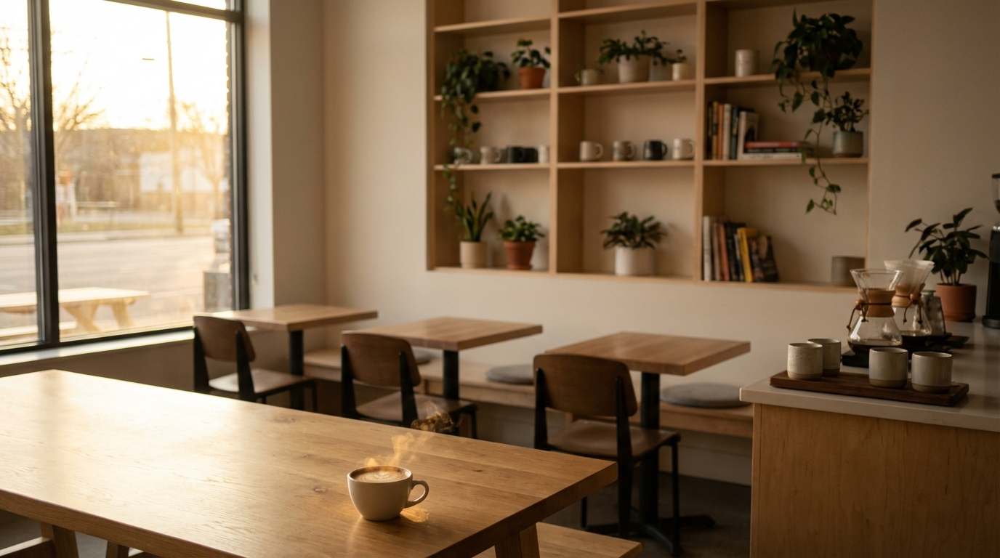

Our Story
From a dream to your favorite neighborhood café
A Passion for Great Coffee
Sunrise Brew Café began in 2018 when founders Maya and David Chen decided to create a space where quality coffee meets genuine hospitality. After years of traveling and experiencing coffee cultures around the world, they brought their vision to Oakwood Heights.
What started as a small corner shop has grown into a beloved community gathering place. We've stayed true to our original mission: serving exceptional coffee while creating a welcoming environment for everyone who walks through our doors.
Every cup we serve reflects our commitment to craftsmanship. We source our beans directly from family farms in Ethiopia, Colombia, and Guatemala, ensuring fair compensation for growers and the highest quality for you.

What We Stand For
Our values guide everything we do, from bean selection to customer service.
Sustainability
We use compostable packaging, partner with eco-conscious suppliers, and minimize waste throughout our operations.
Community
From hosting local artists to supporting neighborhood initiatives, we're invested in making Oakwood Heights thrive.
Quality
We never compromise on ingredients or preparation. Every drink and pastry meets our exacting standards.
Warmth
Whether you're a regular or visiting for the first time, you'll feel welcome and valued at Sunrise Brew.
Meet Our Team
The passionate people behind your perfect cup
Maya Chen
Co-Founder & Head Roaster
Maya trained with master roasters in Seattle and brings her expertise to every batch. She oversees our roasting program and supplier relationships.
David Chen
Co-Founder & Operations
David manages the day-to-day operations and ensures every visit exceeds expectations. His background in hospitality shapes our service culture.
Sofia Martinez
Head Baker
Sofia brings fifteen years of pastry experience to our kitchen. Her croissants and seasonal creations have earned a devoted following.